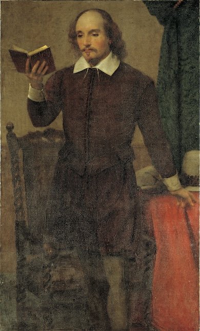
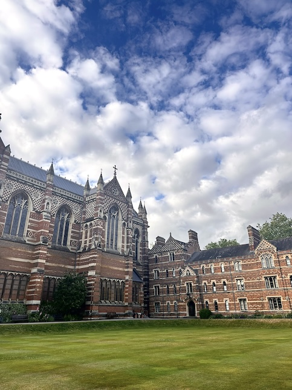

Images for my website
Research papers on The Merchant of Venice and Antony and Cleopatra
This image can reference multiple research papers about William Shakespeare's works written in English221.
Reading experience in different genres
This image of books symbolizes the diverse range of literature and critical texts I’ve engaged with in my English courses, from classic novels to contemporary analyses.
Oxford study abroad experience
A photo of Keble College at the University of Oxford used to portray courses I took in British Detective Fiction and Jane Austen.
